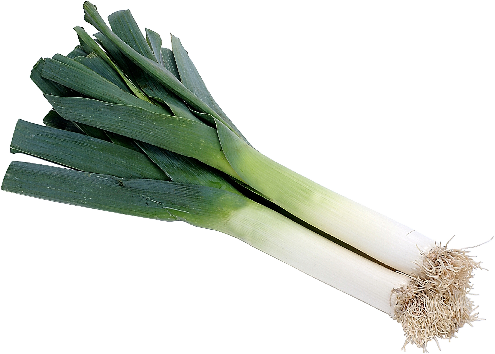
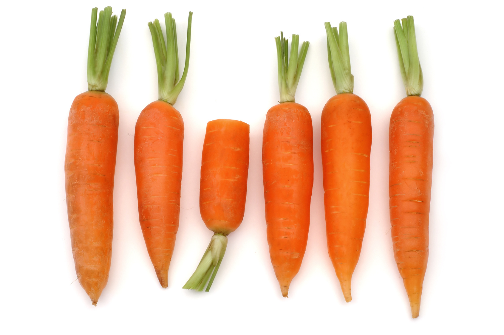
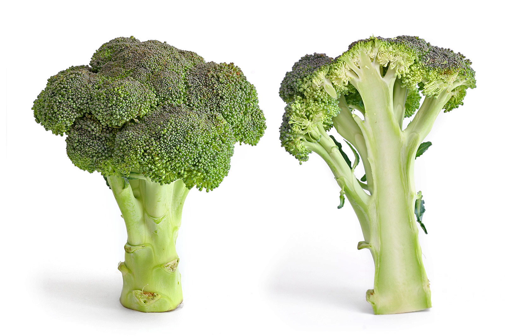
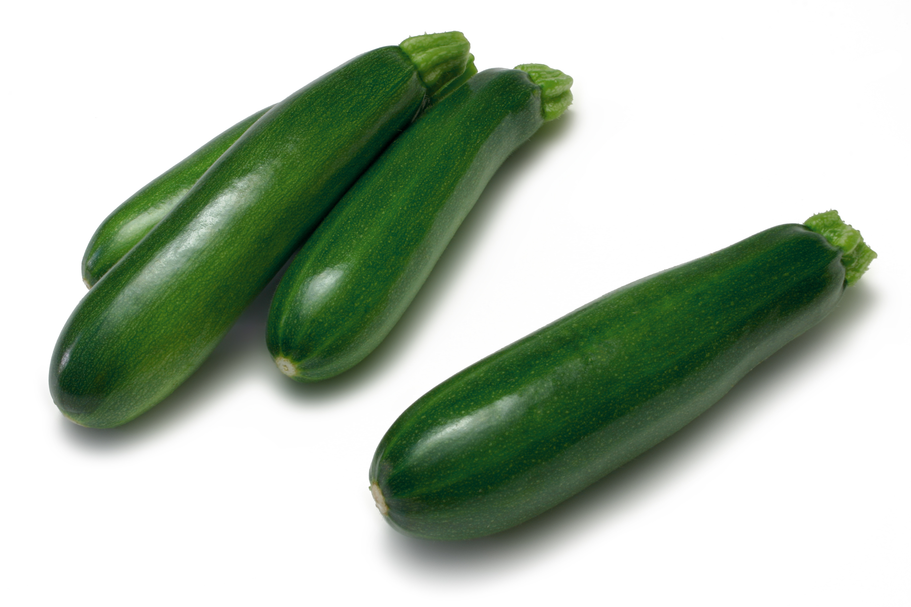

Un légume est la partie comestible d'une plante potagère1. Cette définition, reprise par la plupart des dictionnaires de langue française,
doit être étendue aux champignons comestibles, dont certains sont cultivés (champignon de Paris, shii-také, etc.) et à certaines algues,
dont la consommation est la plus développée en Extrême-Orient2. Cette partie peut être une racine (carotte), une tige (céleri), une
feuille (laitue), une fleur (artichaut), un fruit (poivron), un bulbe (oignon), un tubercule (pomme de terre) ou une graine (maïs).
Étymologie
Le terme légume est attesté en français depuis 1531 selon le Robert historique et vient du latin legumen, plante à gousse. Féminin à
son origine, il a d'abord désigné les graines de légumineuses et de céréales anciennement la base de l'alimentation végétale.
Poireau

Le poireau est un terme qui désigne plusieurs plantes du genre Allium dont Allium polyanthum, le poireau de vigne. Cependant, la
plupart du temps, c'est du poireau cultivé, Allium porrum, dont il est question. Cet article ne traite que de ce dernier. Le poireau commun
est donc une plante herbacée bisannuelle de la famille des Liliacées, largement cultivée comme plante potagère pour ses feuilles
(pseudo-tiges) consommées comme légumes.
Carotte

La carotte (Daucus carota) est une plante bisannuelle de la famille des Apiacées (anciennement ombellifères), largement cultivée pour
sa racine pivotante charnue, comestible, de couleur généralement orangée, consommée comme légume. Le terme « carotte » désigne
aussi ce légume. C'est un légume riche en carotène. La carotte est un tubercule d'hypocotyle, c'est-à-dire un tubercule formé en partie
par l'hypocotyle et en partie par la région supérieure de la racine, et qui s'est tubérisé.
Brocoli

Le brocoli (Brassica oleracea var. italica) est une variété de chou originaire du sud de l'Italie. Il fut sélectionné par les Romains à partir
du chou sauvage. Ceux-ci l'appréciaient beaucoup, et la cuisine italienne l'utilise beaucoup. Il fut introduit en France par Catherine de
Médicis.
Le brocoli présente une tige centrale ferme ramifiée en petits bouquets qui, à la floraison, sont parsemés de minuscules fleurs jaunes.
On le cueille avant l'éclosion de ses fleurs jaunes.
Le mot « brocoli » est dérivé du latin bracchium signifiant « branche », en référence à la forme du légume qui fait penser à des arbres
miniatures. Habituellement de couleur
vert foncé à vert sauge, le brocoli peut aussi être blanc ou pourpre (violacé).
Courgette

La courgette est une plante de la famille des Cucurbitaceae. Le terme désigne un ensemble de cultivars de l'espèce Cucurbita pepo, et
de la sous-espèce Cucurbita pepo ssp. pepo (dont fait partie aussi la citrouille véritable). Au Québec on la nomme généralement
zucchini, du genre masculin, qui est un emprunt de l’italien.